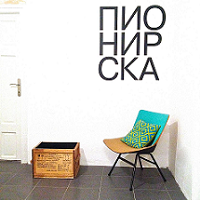

Nakon uspešno održanih Rails Girls radionica u Beogradu, zbog velikog interesovanja devojaka i iz mnogih drugih gradova, po prvi put Rails Girls radionica održaće se i u Novom Sadu. Tokom dvodnevne radionice imaćete priliku da se upoznate sa prvim koracima pravljenja web aplikacija. Nije neophodno imati predznanje, potreban je samo laptop, interesovanje i želja da se malo slobodnog vremena odvoji na neformalno učenje početnog nivoa programiranja. I sve to u prijateljskom okruženju u malim grupama, potpuno besplatno i u pozitivnoj volonterskoj atmosferi.
Rails Girls Novi Sad je deo globalne inicijative koja ima za cilj da približi IT svet ženama i osnaži njihovo interesovanje za aktivnu izgradnju web-a. Ruby on Rails je platforma uz pomoć koje se web aplikacije mogu brzo razvijati, a zasnovana je na programskom jeziku Ruby.
Rails Girls Novi Sad radionica će se održati 24. i 25. januara 2015. godine u Coworking prostoru Pionirska, Novi Sad, Pionirska broj 4 (pored Studija M), II sprat, stan 7.
Prijave će biti otvorene od 5. do 16. januara 2015. godine.
Informacije o učešću na radionici biće poznate 21. januara 2015. godine.Kroz rad u malim grupama i uz pomoć naših mentora, imaćete priliku da se oprobate u pravljenju web aplikacija.
Potreban vam je jedino laptop, radoznalost i malo mašte!
Ukoliko imate želju da se pridružite našem mentorskom timu, pišite nam.
| 16.00 - 16.30 |
Upoznavanje i uvodna rečPrvi dan započinjemo upoznavanjem, uz uvodnu reč mentora i organizatora. |
|---|---|
| 16.30 - 17.45 |
InstalacijaSledi instalacija neophodnog softvera na vašim laptopovima. |
| 17.45 - 18.00 |
Pauza za kafu |
| 18.00 - 20.00 |
Try RubyUpoznavanje sa Ruby programskim jezikom. |
| 10:00 - 10:30 |
Registracija učesnicaDrugi dan započinjemo registracijom učesnica uz kafu i eventualnim pitanjima nakon jučerašnjeg dana. |
|---|---|
| 10:30 - 13:00 |
Pravljenje aplikacijaUpoznavanje sa osnovama kodiranja u malim grupama. Razvijanje sopstvenih aplikacija uz pomoć mentora. Pauze za kafu i osveženje. |
| 13:00 - 14:00 |
Pauza za ručak |
| 14:00 - 17:00 |
NastavakDalji rad na aplikaciji uz pomoć mentora. Pauze za kafu i osveženje. |
Organizaciju i održavanje prve Rails Girls radionice u Novom Sadu pomogli su:

Coworking prostor Pionirska
Radni prostor za frilensere u Novom Sadu. Mesto za sastanke i networking, radionice i razmenu.
Ukoliko želite da kao partner ili sponzor pomognete održavanje neprofitne Rails Girls Novi Sad radionice pišite nam.
Koliko košta učešće na radionici? Učešće na radionici je potpuno besplatno!
Ko sve može da se prijavi? Devojke i žene svih uzrasta i zanimanja. Potrebno je samo imati laptop, koji ćete poneti, i osnovno znanje o korišćenju računara.
Imate još neko pitanje ili nedoumicu? Kontaktirajte nas putem e-mail-a railsgirlsnovisad@gmail.com.